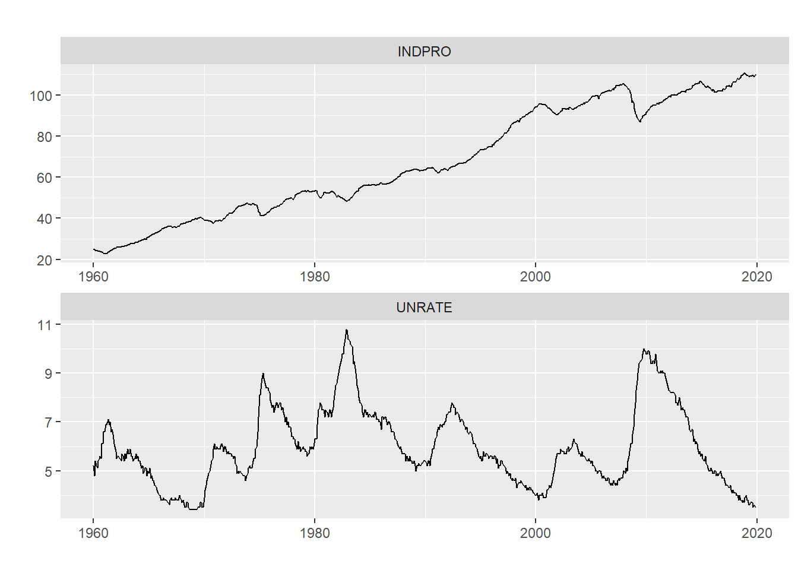
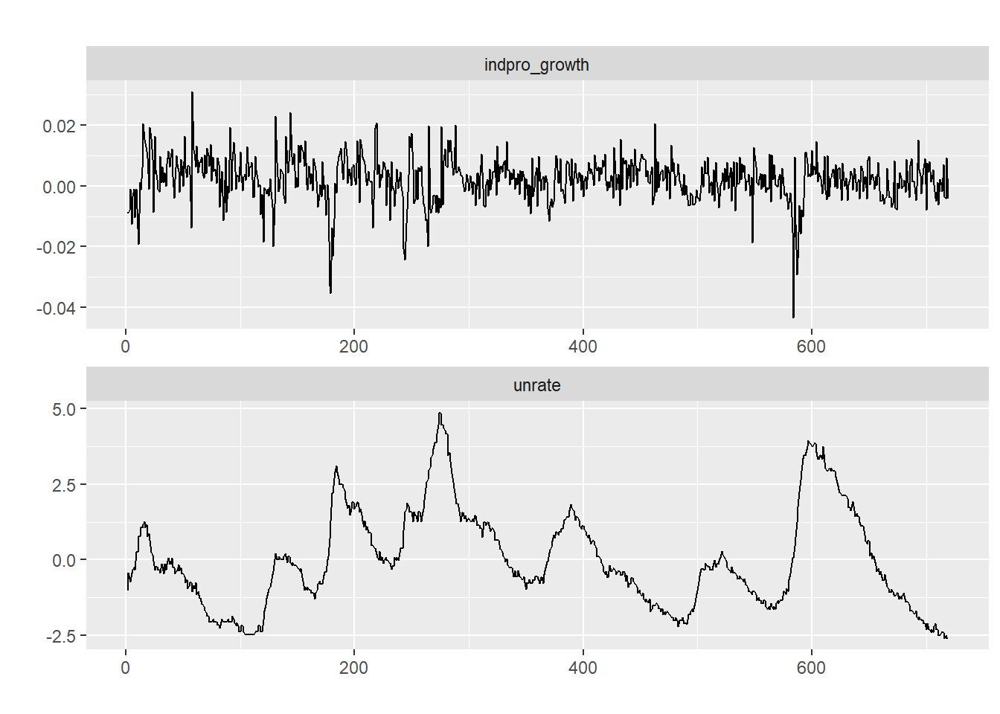
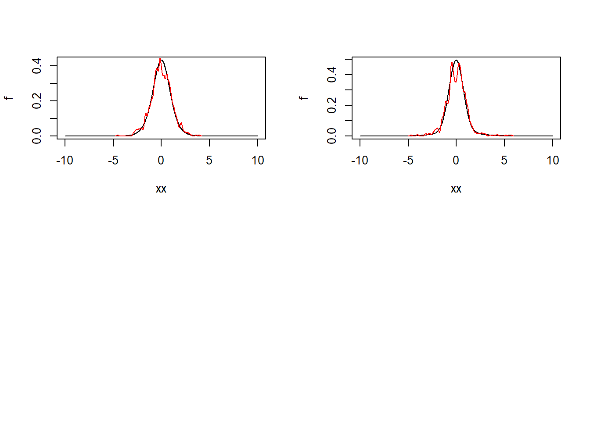

Section 4 Application to real-world data
In this section, we implement the GMR2019 method on the FRED-MD dataset. We take inspiration from the bivariate VAR model by Blanchard and Quah (1989), by fitting a bivariate VARMA(4,1) model of the growth of industrial production and the unemployment rate using the monthly data for the U.S. economy over the period 1960-2020. This naive model will still prove to be useful to get a practical sense of the procedure.
As a first step, we import the data and select the relevant series.
library(BVAR) ## Used only to call the fred-md dataset##
## Attaching package: 'BVAR'## The following objects are masked from 'package:vars':
##
## fevd, irflibrary(lubridate)##
## Attaching package: 'lubridate'## The following objects are masked from 'package:base':
##
## date, intersect, setdiff, unionsource("C:/Users/Alessandro Ciancetta/Documents/Universita/UniPi/V/TesiEconomics/ScriptR-TesiEconomics/DaFare26maggio/Code/sources/FAVAR_functions/plot_ts.R")
data <- fred_md %>%
rownames_to_column(var = "date") %>%
mutate(date = as_date(date)) %>%
# select(date, INDPRO, CPIAUCSL, FEDFUNDS, UNRATE) %>%
select(date, INDPRO, UNRATE) %>%
filter(date >= ymd(19600101) & date < ymd(20200101))
dates <- data$date
data <- data[,-1]
plot_ts(data, date = dates)
We then pre-process the data to get stationary time series, by taking the growth rate of the industrial production and the de-trended unemployment rate.
T <- nrow(data)
## growth rates of the industrial production
indpro_growth <- data$INDPRO/(c(NaN,data$INDPRO[1:(T-1)])) - 1
## De-trended rate of unemployment
## (in this case, this almost coincide with de-meaning)
trend <- 1:T
unrate_detrend <- lm(data$UNRATE ~ trend)$residuals
# View(cbind(data$UNRATE, unrate_detrend, data$UNRATE-unrate_detrend))
y <- tibble(indpro_growth=indpro_growth[-1], unrate=unrate_detrend[-1])
plot_ts(y)
We can now estimate the model. As a first step, we compute the 2SLS-GMM estimator. This method is quite imprecise, but it has the advantage of requiring no assumptions on the distribution of the errors and it is faster than the maximum likelihood approach. For this reason, GMR2019 suggest to use this estimator as a first step, and to then use the estiamted values as the initial parameters of for the ML procedure. Since the true distribution of the shocks is unknown, we more precisely adopt a pseudo maximum likelihood approach by considering the p.d.f. of a Gaussian mixture.
## Set the number of lags
p = 4
## Initialize the cumulants (for GMM)
df <- 5
mu.2 <- 1
mu.4 <- (3 + 6/(df - 4))
mu.3 <- 0
kappa.3.modif <- 0
kappa.4.modif <- mu.4 - 3*mu.2^2
## Overweight order-2 moments in the first step
multipl.order.2 <- 10
indic.solve.C <- 1 #0
u <- rbind(
c(2,0),
c(0,2),
c(1,0),
c(2,0),
c(1,0),
c(2,0),
c(0,1),
c(0,2),
c(0,1),
c(0,2)
)
v <- rbind(
c(0,0),
c(0,0),
c(2,0),
c(1,0),
c(0,2),
c(0,1),
c(0,2),
c(0,1),
c(2,0),
c(1,0)
)
param.ini.4.GMM <- NULL
## Estimation
res.estim.GMM <- estim.VARMAp1.2SLS.GMM(as.matrix(y),u,v,
nb.iterations.gmm = 5,
maxitNM=2000,
indic.Blaschke=1,
indic.print=0,
lag.NW=3,
indic.estim.phi=1,
indic.constant = 1,
indic.3rd.4th.order.moments=1,
param.ini=param.ini.4.GMM,
p=p,
addit.IV=3 ## number of IVs
)## Warning in optimx.check(par, optcfg$ufn, optcfg$ugr, optcfg$uhess, lower, : Parameters or bounds appear to have different scalings.
## This can cause poor performance in optimization.
## It is important for derivative free methods like BOBYQA, UOBYQA, NEWUOA.## [1] "========================================================="
## [1] "========================================================="
## [1] " First pass: 'Ad hoc' Omega "
## [1] "========================================================="
## [1] "========================================================="
## [1] "--- Initial value of the criteria: 29937.6155367797"
## [1] "--- Starting Minimization of criteria ---"
## [1] "Criteria at the end of iteration 1 (Max eval:2000): 40.1708158013186"
## [1] "Criteria at the end of iteration 2 (Max eval:2000): 27.5107882558548"
## [1] "Criteria at the end of iteration 3 (Max eval:2000): 26.9856472785477"
## [1] "Criteria at the end of iteration 4 (Max eval:2000): 26.8099561388832"
## [1] "Criteria at the end of iteration 5 (Max eval:2000): 26.7317391216593"
## [1] "--- End of Minimization of criteria ---"
## [,1] [,2]
## [1,] -0.3803227 0.02150216
## [2,] 2.2840275 0.68875288
## [1] "Looking for alternative MA representation (1/4)"
## [1] "Looking for alternative MA representation (2/4)"
## [1] "Looking for alternative MA representation (3/4)"
## [1] "Looking for alternative MA representation (4/4)"
## [1] "--- Initial value of the criteria: 183.517926644411"
## [1] "--- Starting Minimization of criteria ---"
## [1] "Criteria at the end of iteration 1 (Max eval:2000): 28.805434800134"
## [1] "Criteria at the end of iteration 2 (Max eval:2000): 28.6132274326595"
## [1] "Criteria at the end of iteration 3 (Max eval:2000): 28.5239740250049"
## [1] "Criteria at the end of iteration 4 (Max eval:2000): 28.5022171426145"
## [1] "Criteria at the end of iteration 5 (Max eval:2000): 28.5015763825543"
## [1] "--- End of Minimization of criteria ---"
## [1] "--- Initial value of the criteria: 164.411475847416"
## [1] "--- Starting Minimization of criteria ---"
## [1] "Criteria at the end of iteration 1 (Max eval:2000): 22.338224897635"
## [1] "Criteria at the end of iteration 2 (Max eval:2000): 21.9489708511242"
## [1] "Criteria at the end of iteration 3 (Max eval:2000): 21.4215159195505"
## [1] "Criteria at the end of iteration 4 (Max eval:2000): 21.0532296111802"
## [1] "Criteria at the end of iteration 5 (Max eval:2000): 20.7530964006408"
## [1] "--- End of Minimization of criteria ---"
## [1] ""
## [1] " ++++ Improvement of criteria ++++"
## [1] ""
## [,1] [,2]
## [1,] -0.256607 0.03564682
## [2,] 10.328807 1.31278123
## [1] "--- Initial value of the criteria: 583.592122111067"
## [1] "--- Starting Minimization of criteria ---"
## [1] "Criteria at the end of iteration 1 (Max eval:2000): 32.1926192844288"
## [1] "Criteria at the end of iteration 2 (Max eval:2000): 31.6598609210212"
## [1] "Criteria at the end of iteration 3 (Max eval:2000): 31.1925827317296"
## [1] "Criteria at the end of iteration 4 (Max eval:2000): 31.1190938169463"
## [1] "Criteria at the end of iteration 5 (Max eval:2000): 31.0682874150904"
## [1] "--- End of Minimization of criteria ---"
## [1] "========================================================="
## [1] "========================================================="
## [1] " Second pass: 'Optimal' Omega "
## [1] "========================================================="
## [1] "========================================================="
## [1] "Criteria at the end of iteration 1 (Max eval:2000): 13.3410870057891"
## [1] "Criteria at the end of iteration 2 (Max eval:2000): 12.9875604677233"
## [1] "Criteria at the end of iteration 3 (Max eval:2000): 12.8917352487576"
## [1] "Criteria at the end of iteration 4 (Max eval:2000): 12.8822959720433"
## [1] "Criteria at the end of iteration 5 (Max eval:2000): 12.679107536186"
## [1] "--- End of Minimization of criteria ---"res.estim.GMM$Theta## [,1] [,2]
## [1,] -0.1349984 0.02815548
## [2,] 8.9776912 1.16963120## Set the GMM estimates as the initial values for the ML
## optimization procedure
Model.est.GMM <- list()
Model.est.GMM$Phi <- res.estim.GMM$Phi.est
n <- dim(Model.est.GMM$Phi)[1]
Model.est.GMM$C <- res.estim.GMM$C0.est
Model.est.GMM$Theta <- array(res.estim.GMM$Theta.est,c(n,n,1))
Model.est.GMM$distri <- NULL
Model.est.GMM$Mu <- res.estim.GMM$mu.est
ETA.est <- estim.struct.shocks(Y = as.matrix(y), Model = Model.est.GMM)$ETA.est
vec.theta1 <- NULL
vec.theta2 <- NULL
vec.theta3 <- NULL
par(mfrow=c(2,2))
for(i in 1:n){
res.estim <- estim.MLE.mixtures(ETA.est[,i])
vec.theta1 <- c(vec.theta1,res.estim$param.est[1])
vec.theta2 <- c(vec.theta2,res.estim$param.est[2])
vec.theta3 <- c(vec.theta3,res.estim$param.est[3])
xx <- seq(-10,10,by=.01)
f <- density.mixt.gauss(res.estim$param.est,xx)
plot(xx,f,type="l")
lines(density(ETA.est[,i],bw=.1),col="red")
}
## Estimate the model
param.ini <- c(res.estim.GMM$Phi.est,res.estim.GMM$Theta.est,
res.estim.GMM$C0.est,
vec.theta1,vec.theta2,vec.theta3)
res.estim.MLE <- estim.MA.inversion(param.ini,Model.est.GMM,as.matrix(y),
MAXIT.nlminb=300,
MAXIT.NlMd=1000,
nb.loops=4,
indic.Blaschke=1,
MAXIT.nlminb.BM=300,
MAXIT.NlMd.BM=1000,
nb.loops.BM=2,
indic.print=0,indic.compute.cov.mat=1)## [1] "param.ini:"
## [1] -2.270024e-01 -3.869033e+00 1.389561e-02 1.545562e+00 2.687431e-01
## [6] 1.404742e+00 -1.818062e-02 -3.712492e-01 2.056953e-01 1.057485e-02
## [11] -3.840567e-05 -1.599325e-01 1.786540e-01 -8.262147e-01 4.901788e-03
## [16] -1.902981e-02 -1.349984e-01 8.977691e+00 2.815548e-02 1.169631e+00
## [21] 8.939772e-04 9.557083e-02 -5.914673e-03 7.693439e-02 5.508629e-02
## [26] 2.368594e+00 -7.585889e-01 -6.646727e-02 5.313747e-02 -9.038630e-02## Warning in optimx.check(par, optcfg$ufn, optcfg$ugr, optcfg$uhess, lower, : Parameters or bounds appear to have different scalings.
## This can cause poor performance in optimization.
## It is important for derivative free methods like BOBYQA, UOBYQA, NEWUOA.
## Warning in optimx.check(par, optcfg$ufn, optcfg$ugr, optcfg$uhess, lower, : Parameters or bounds appear to have different scalings.
## This can cause poor performance in optimization.
## It is important for derivative free methods like BOBYQA, UOBYQA, NEWUOA.
## Warning in optimx.check(par, optcfg$ufn, optcfg$ugr, optcfg$uhess, lower, : Parameters or bounds appear to have different scalings.
## This can cause poor performance in optimization.
## It is important for derivative free methods like BOBYQA, UOBYQA, NEWUOA.
## Warning in optimx.check(par, optcfg$ufn, optcfg$ugr, optcfg$uhess, lower, : Parameters or bounds appear to have different scalings.
## This can cause poor performance in optimization.
## It is important for derivative free methods like BOBYQA, UOBYQA, NEWUOA.## [1] "Looking for alternative MA representation (1/4)"
## [1] "Looking for alternative MA representation (2/4)"
## [1] "Looking for alternative MA representation (3/4)"
## [1] "Looking for alternative MA representation (4/4)"
## [1] "param.ini.i:"
## [1] -2.270024e-01 -3.869033e+00 1.389561e-02 1.545562e+00 2.687431e-01
## [6] 1.404742e+00 -1.818062e-02 -3.712492e-01 2.056953e-01 1.057485e-02
## [11] -3.840567e-05 -1.599325e-01 1.786540e-01 -8.262147e-01 4.901788e-03
## [16] -1.902981e-02 -4.358196e+00 1.213685e+01 -2.493017e-02 7.251465e-01
## [21] -1.552182e-03 3.750390e-03 -1.200788e-03 1.555104e-01 5.508629e-02
## [26] 2.368594e+00 -7.585889e-01 -6.646727e-02 5.313747e-02 -9.038630e-02## Warning in optimx.check(par, optcfg$ufn, optcfg$ugr, optcfg$uhess, lower, : Parameters or bounds appear to have different scalings.
## This can cause poor performance in optimization.
## It is important for derivative free methods like BOBYQA, UOBYQA, NEWUOA.
## Warning in optimx.check(par, optcfg$ufn, optcfg$ugr, optcfg$uhess, lower, : Parameters or bounds appear to have different scalings.
## This can cause poor performance in optimization.
## It is important for derivative free methods like BOBYQA, UOBYQA, NEWUOA.## [1] "param.ini.i:"
## [1] -2.270024e-01 -3.869033e+00 1.389561e-02 1.545562e+00 2.687431e-01
## [6] 1.404742e+00 -1.818062e-02 -3.712492e-01 2.056953e-01 1.057485e-02
## [11] -3.840567e-05 -1.599325e-01 1.786540e-01 -8.262147e-01 4.901788e-03
## [16] -1.902981e-02 -2.156171e-01 2.127534e+00 7.057141e-03 6.478586e-01
## [21] 1.129001e-03 1.408667e-01 -6.683738e-03 6.782243e-02 5.508629e-02
## [26] 2.368594e+00 -7.585889e-01 -6.646727e-02 5.313747e-02 -9.038630e-02## Warning in optimx.check(par, optcfg$ufn, optcfg$ugr, optcfg$uhess, lower, : Parameters or bounds appear to have different scalings.
## This can cause poor performance in optimization.
## It is important for derivative free methods like BOBYQA, UOBYQA, NEWUOA.
## Warning in optimx.check(par, optcfg$ufn, optcfg$ugr, optcfg$uhess, lower, : Parameters or bounds appear to have different scalings.
## This can cause poor performance in optimization.
## It is important for derivative free methods like BOBYQA, UOBYQA, NEWUOA.## [1] "param.ini.i:"
## [1] -2.270024e-01 -3.869033e+00 1.389561e-02 1.545562e+00 2.687431e-01
## [6] 1.404742e+00 -1.818062e-02 -3.712492e-01 2.056953e-01 1.057485e-02
## [11] -3.840567e-05 -1.599325e-01 1.786540e-01 -8.262147e-01 4.901788e-03
## [16] -1.902981e-02 -4.477190e+00 3.611265e+01 -2.968505e-02 1.683193e+00
## [21] -1.544659e-03 9.326253e-03 -1.077550e-03 1.084715e-01 5.508629e-02
## [26] 2.368594e+00 -7.585889e-01 -6.646727e-02 5.313747e-02 -9.038630e-02## Warning in optimx.check(par, optcfg$ufn, optcfg$ugr, optcfg$uhess, lower, : Parameters or bounds appear to have different scalings.
## This can cause poor performance in optimization.
## It is important for derivative free methods like BOBYQA, UOBYQA, NEWUOA.
## Warning in optimx.check(par, optcfg$ufn, optcfg$ugr, optcfg$uhess, lower, : Parameters or bounds appear to have different scalings.
## This can cause poor performance in optimization.
## It is important for derivative free methods like BOBYQA, UOBYQA, NEWUOA.res.estim.MLE$Theta## [,1] [,2]
## [1,] 0.09898047 0.0244470
## [2,] 2.67743894 0.5995404
The next table compares the results of the estimation.
Parameters <- c("$\\Phi_{11}^{(1)}$", "$\\Phi_{21}^{(1)}$", "$\\Phi_{12}^{(1)}$", "$\\Phi_{22}^{(1)}$",
"$\\Phi_{11}^{(2)}$", "$\\Phi_{21}^{(2)}$", "$\\Phi_{12}^{(2)}$", "$\\Phi_{22}^{(2)}$",
"$\\Phi_{11}^{(3)}$", "$\\Phi_{21}^{(3)}$", "$\\Phi_{12}^{(3)}$", "$\\Phi_{22}^{(3)}$",
"$\\Phi_{11}^{(4)}$", "$\\Phi_{21}^{(4)}$", "$\\Phi_{12}^{(4)}$", "$\\Phi_{22}^{(4)}$",
"$\\Theta_{11}$", "$\\Theta_{21}$", "$\\Theta_{12}$", "$\\Theta_{22}$",
"$C_{11}$", "$C_{21}$", "$C_{12}$", "$C_{22}$")
GMM <- c(res.estim.GMM$Phi.est, res.estim.GMM$Theta, res.estim.GMM$C0.est)
GMM.stdev <- c(sqrt(diag(res.estim.GMM$Asympt$Var.alpha.hat))[3:18],
sqrt(diag(res.estim.GMM$Asympt$Var.beta.hat)[5:8]),
sqrt(diag(res.estim.GMM$Asympt$Var.beta.hat)[1:4]))
MLE <- c(res.estim.MLE$Phi, res.estim.MLE$Theta, res.estim.MLE$C)
MLE.stdv <- sqrt(diag(res.estim.MLE$MV)[1:24])
tibble(Parameters, GMM,GMM.stdev ,MLE,MLE.stdv) %>%
mutate_if(is.numeric, round, digits=3) %>%
knitr::kable(caption = "Estimates of the parameters")| Parameters | GMM | GMM.stdev | MLE | MLE.stdv |
|---|---|---|---|---|
| \(\Phi_{11}^{(1)}\) | -0.227 | 0.183 | 0.258 | 0.111 |
| \(\Phi_{21}^{(1)}\) | -3.869 | 6.589 | -3.276 | 1.379 |
| \(\Phi_{12}^{(1)}\) | 0.014 | 0.008 | 0.019 | 0.008 |
| \(\Phi_{22}^{(1)}\) | 1.546 | 0.333 | 1.453 | 0.071 |
| \(\Phi_{11}^{(2)}\) | 0.269 | 0.079 | 0.274 | 0.073 |
| \(\Phi_{21}^{(2)}\) | 1.405 | 2.697 | 0.945 | 0.961 |
| \(\Phi_{12}^{(2)}\) | -0.018 | 0.008 | -0.019 | 0.008 |
| \(\Phi_{22}^{(2)}\) | -0.371 | 0.301 | -0.276 | 0.091 |
| \(\Phi_{11}^{(3)}\) | 0.206 | 0.054 | 0.182 | 0.056 |
| \(\Phi_{21}^{(3)}\) | 0.011 | 1.551 | 0.228 | 1.076 |
| \(\Phi_{12}^{(3)}\) | 0.000 | 0.003 | -0.004 | 0.003 |
| \(\Phi_{22}^{(3)}\) | -0.160 | 0.086 | -0.060 | 0.062 |
| \(\Phi_{11}^{(4)}\) | 0.179 | 0.050 | 0.114 | 0.056 |
| \(\Phi_{21}^{(4)}\) | -0.826 | 1.486 | 0.423 | 0.797 |
| \(\Phi_{12}^{(4)}\) | 0.005 | 0.002 | 0.004 | 0.002 |
| \(\Phi_{22}^{(4)}\) | -0.019 | 0.063 | -0.123 | 0.032 |
| \(\Theta_{11}\) | -0.135 | 0.167 | 0.099 | 0.105 |
| \(\Theta_{21}\) | 8.978 | 4.204 | 2.677 | 1.090 |
| \(\Theta_{12}\) | 0.028 | 0.014 | 0.024 | 0.008 |
| \(\Theta_{22}\) | 1.170 | 0.403 | 0.600 | 0.067 |
| \(C_{11}\) | 0.001 | 0.001 | 0.000 | 0.001 |
| \(C_{21}\) | 0.096 | 0.028 | 0.150 | 0.007 |
| \(C_{12}\) | -0.006 | 0.001 | -0.007 | 0.000 |
| \(C_{22}\) | 0.077 | 0.024 | 0.036 | 0.029 |